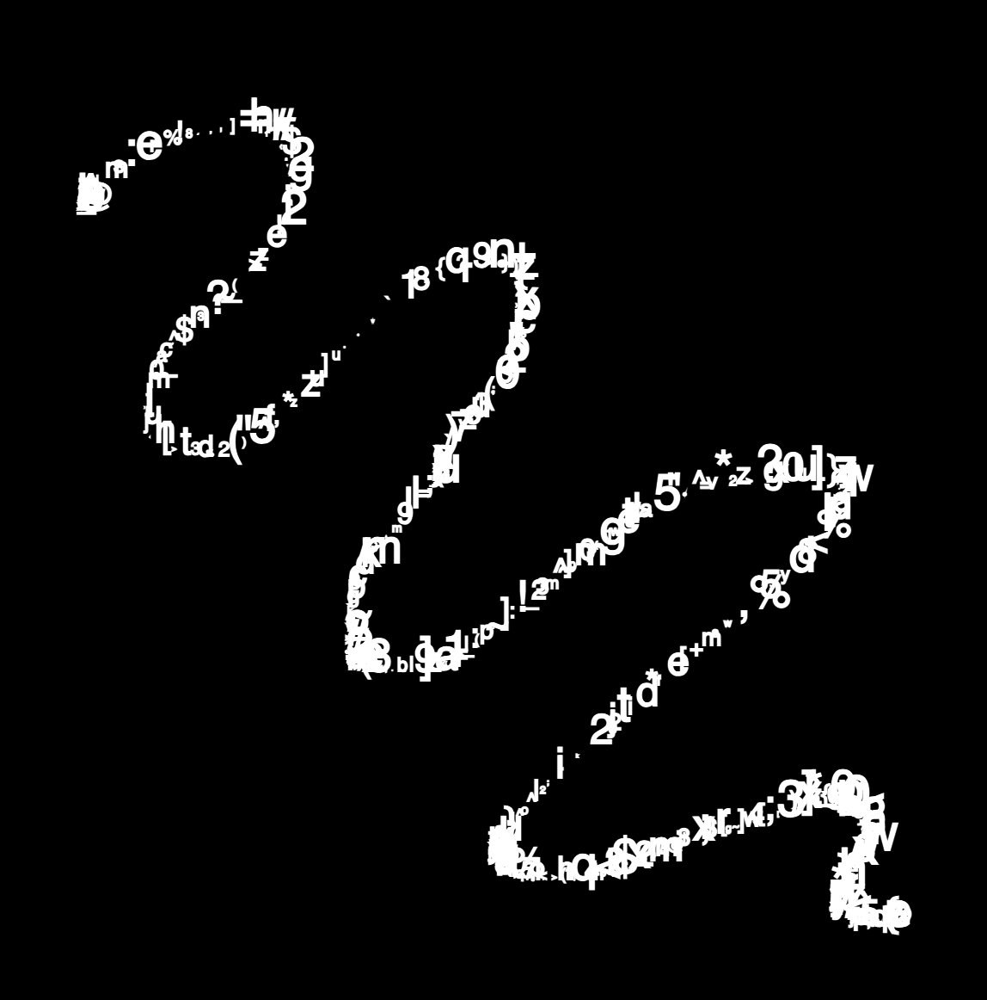

Experiment 6 - Grammars & Text Art
Imitate
I was inspired by the Lettersoup generative design. I wanted to create a night sky where users can create their own constellations. The Lettersoup generative design provided great inspiration for my design because of the lines that are formed when connecting two characters.
Integrate
In this code, I've combined multiple techniques to create an interactive sketch. The main focus is on nodes being drawn when the mouse is clicked and lines connecting the nodes to create constellations. Each star is drawn using a loop to create the outline of a five-pointed star shape, with each line segment filled with random characters chosen from the `letters` array. Additionally, I've integrated the functionality of drawing nodes when the mouse is clicked, allowing the user to interactively populate the canvas with additional elements:
These nodes are then connected by lines to form constellations, adding an element of interconnectedness and complexity to the visual composition:
Finally, I've implemented a reset feature triggered by the RETURN key, which clears the canvas, resets the fade effect, and sets the rotation angle back to its initial state, providing a way to refresh the sketch and start anew. Together, these techniques combine to create a dynamic and engaging visual experience where users can interact with and explore the evolving constellation of characters on the canvas.
Innovate
As I look at this code, I see a canvas filled with rotating stars composed of random characters, connected by nodes drawn when the mouse is clicked, forming intricate constellations. It's a starting point for something truly unique and novel. By building upon this foundation, I can imagine various possibilities. For example, I could introduce interactive elements that respond to user input, such as changing the shape or color of the stars based on mouse movements or clicks. Additionally, I could incorporate dynamic animations or effects, like trails following the nodes as they move or twinkling stars that react to sound or music. Moreover, I could explore thematic variations, such as creating a celestial-themed game where players navigate through the constellations to reach a goal, or integrating educational components to teach about astronomy and mythology. The combination of rotating stars, interactive nodes, and connecting lines opens up a world of creative opportunities to explore and expand upon, allowing me to craft something truly unique and engaging.
Reflection
As I reflect on the process of creating this interactive art piece, I find that there were both highs and lows along the way. One of the highs was the excitement of seeing the rotating stars formed using random characters come to life on the canvas. It was satisfying to witness the visual impact of the rotating animation combined with the randomness of the characters, creating a dynamic and engaging composition. Another high was the moment when I successfully implemented the nodes being drawn when the mouse is clicked, adding an interactive element to the artwork. This addition enhanced the user experience and allowed for greater exploration and personalization of the piece.
However, there were also lows during the creation process. One of the challenges I faced was fine-tuning the positioning and spacing of the characters within the star shapes. Achieving the desired aesthetic while ensuring that the characters formed recognizable star outlines required experimentation and adjustment. Additionally, managing the complexity of the code as I integrated multiple elements such as the rotating stars, interactive nodes, and connecting lines posed a challenge. Balancing these different components while maintaining code readability and efficiency required careful planning and organization.
Overall, despite encountering challenges along the way, the process of creating this interactive art piece was a rewarding experience. It provided opportunities for learning and experimentation while allowing me to explore the intersection of code and creativity in a dynamic and engaging way.
Results
Click or hold down and drag the mouse button to draw points of a constellation!
Press RETURN to reset night sky.